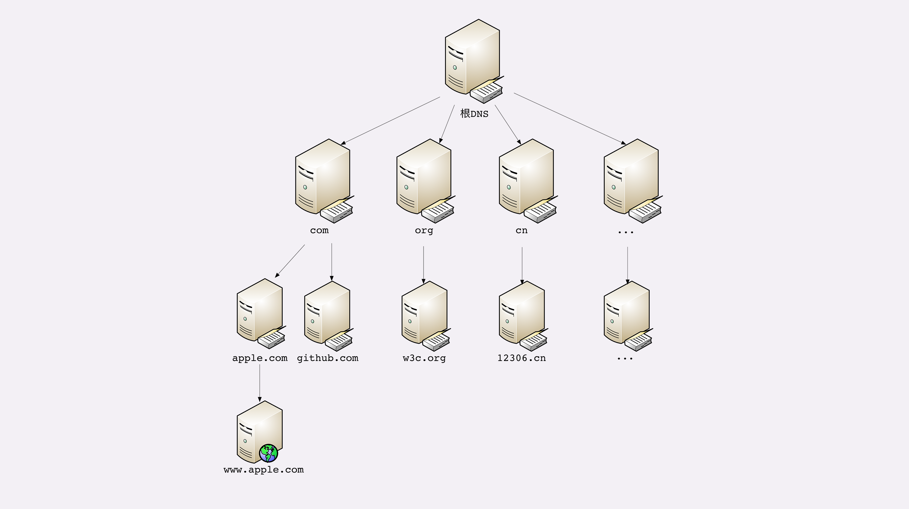
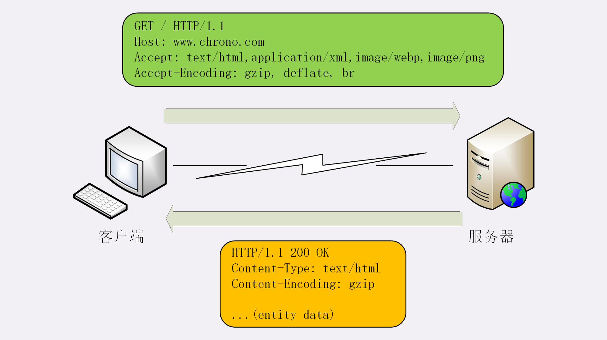
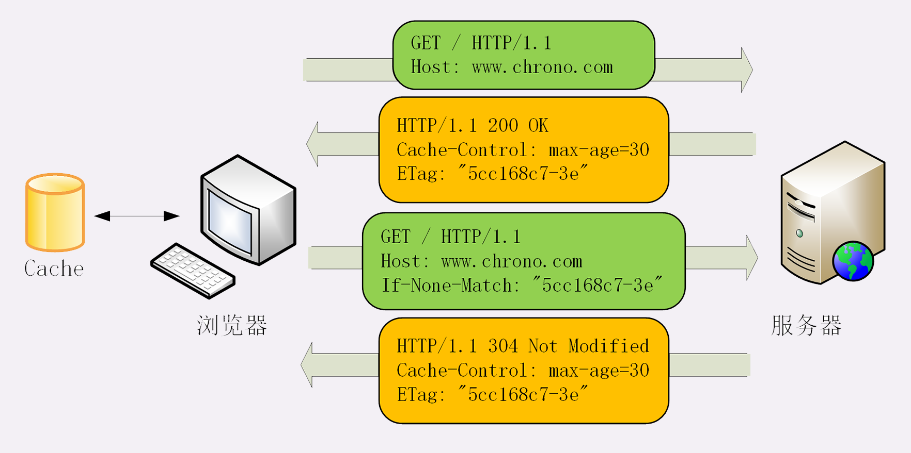

HTTP笔记
01 | 时势与英雄：HTTP的前世今生
HTTP/0.9
1、20世纪90年代初，HTTP/0.9诞生，只有GET请求，并且传输的是文本
HTTP/1.0
因为增加了图片，音频等，所以需要支持更多的内容，在1996年发布，只是一个版本
- 增加了HEAD、POST等新方法
- 增加了响应码
- 增加了协议版本号
- 引入了HTTP Header的概念
- 支持传输的不在仅限于文本
HTTP/1.1
该版本只是对1.0的小幅度修改，但是他是一个标准
- 增加了PUT、DELETE方法
- 增加了缓存机制
- 明确了连接管理，允许持久连接
- 允许响应数据分块，利于传输大文件
- 强制要求Host头
HTTP/2.0
2015年诞生，基于Google的SPDY协议
- 二进制协议，不再是纯文本
- 可以发起多个请求
- 使用专用算法，压缩头部
- 允许服务器主动向客户端推送数据
- 增强了安全性，要求通信加密
HTTP/3.0
基于Google的QUIC协议，2018年开始制定标准，还未诞生
02 | HTTP是什么？HTTP又不是什么
HTTP是什么
是超文本传输协议
协议：计算机之间沟通交流的一个规范
传输：计算机世界里两个点之间传输数据的约定和规范
超文本:这里的文本指的不是传文本，而是图片、视屏、音频等都可以算作是文本，而超文本，就是这种文本的混合体，关键的是含有超链接，能够从一个文本跳跃到另外一个文本
HTTP是计算机世界中用户两点之间传输视屏、文本、图片等数据的一个约定和规范
HTTP不是什么
只是一个种协议，和FTP、SMTP协议一样
HTTP不是一个孤立的协议，通常跑在TCP/IP协议栈上,依靠IP协议实现寻址和路由、TCP协议实现可靠传输、DNS协议实现域名查找、SSL/TLS协议实现安全通信
03 | HTTP世界全览（上）：与HTTP相关的各种概念
网络世界
我们通常说的上网其实是万维网，他只是网络世界中的一个子集。万维网是基于HTTP实现的，传输超文本资源。能力也就被限制在HTTP协议之内。
除了万维网还有很多其他的资源，例如FTP网络下载，SSH安全登录、各种即时通信等
但是HTTP协议非常灵活，易于扩展，而且超文本表述能力很强，可以把原本不属于超文本的资源包装成HTTP来访问。例如微信网页版、邮箱网页版等
浏览器
浏览器也被成为用户代理
web服务器
比较有名的是Apache和Nginx
CDN
CDN:”Content Delivery Network”，既内容分发网络。利用了HTTP的缓存和代理技术。可以不用直接访问源网站就可以得到数据
CDN的功能不止基本的网络加速功能，还提供负载均衡，安全防护，跨运营商网络等功能
爬虫
据估计，网络中50%的流量都是由爬虫产生的
04 | HTTP世界全览（下）：与HTTP相关的各种协议
TCP/IP
IP协议主要解决的是寻址和路由的问题，IP协议使用IP地址标识和定位互联网上的每一台计算机
TCP协议，位于IP协议之上，基于IP协议提供可靠的、字节流形式的通信
DNS
将域名解析为IP，域名最右边的为顶级域名，例如com、cn、edu
URL
其实URL是URI的一个子集，但是现在不怎么区分了，主要有三个部分组成：协议名、主机名、路径
HTTPS
加密通信
代理
匿名代理：完全隐藏了被代理的机器，外界看到的知识代理服务器
透明代理：外界既知道代理，也知道客户端
正向代理：靠近客户端，代表客户端向服务器发送请求（VPN翻墙）
反向代理：靠近服务端，代表服务器响应客户端的请求
可以做很多的事情：
- 负载均衡
- 内容缓存
- 安全防护
- 数据处理
05 | 常说的“四层”和“七层”到底是什么？“五层”“六层”哪去了？
TCP/IP 网络分层模型
TCP/IP设计者非常有前瞻性，采用了分层设计，每个层都分配不同的职责。将一个大问题分成了许多个小问题。
链路层，负责在以太网和WIFI上发送数据，是工作在网卡上的，利用MAC地址标识每个计算机，传输单位是帧
网络互连层，IP协议工作的地方，在这一层将MAC地址转为IP地址，或者是将IP地址转成MAC地址，传输单位是包
传输层，TCP协议工作的地方，负责互联网中两个点之间的可靠的，字节流的传输数据，传输单位是段
TCP是可靠的传输，不会丢失数据，不会发送重复数据，发出和接受的包是有顺序的，并且需要先建立连接才可以通信
UDP是不可靠的传输，不会保证数据不丢失不重复，发包是顺序的，收包是杂乱的。不需要建立连接就直接发送数据
应用层，各种面向具体应用的协议。比如HTTP,FTP等等，传输单位是报文
OSI网络分层模型

- 物理层：网络的物理形式，比如光纤、电缆、网卡等
- 链路层：相当于TCP/IP的链路层
- 网络层：相当于TCP/IP的网络连接层
- 传输层：相当于TCP/IP的传输层
- 会话层：维持网络中的会话状态，既保持会话保持和同步
- 表示层：将数据转换为合适的、可理解的格式
- 应用层：面向具体的应用传输数据
两个分层模型的映射关系

TCP/IP 协议栈的工作方式

06 | 域名里有哪些门道？
域名的形式
格式：主机名.二级域名.顶级域名
域名的解析
- 根域名服务器：管理顶级域名服务器，返回例如com、net、cn等顶级域名服务器的IP地址
- 顶级域名服务器：管理权威服务器，比如，com顶级域名服务器会返回apple.com服务器的地址
- 权威域名服务器：管理自己域名下的主机IP地址，比如www.apple.com的地址
目前全世界只有13个根服务器，全世界有很多非权威服务器。会缓存DNS解析记录，如果有缓存就不会去访问DNS根服务器。比较有名的是Google的8.8.8.8。
个人电脑的DNS解析过程：浏览器缓存->操作系统缓存->Hosts文件->非权威域名服务器->根域名服务器->顶级域名服务器->权威域名服务器
08 | 键入网址再按下回车，后面究竟发生了什么？
09 | HTTP报文是什么样子的？
报文结构

HTTP结构和TCP结构相同，都需要在数据上添加很多额外的信息，比如端口和序号等。只有这些数据，tcp包才能正确的送到目的地。HTTP有一个部分不同的是，传输的数据都是ASCII的文本，很容易用肉眼阅读
HTTP结构有三部分构成：
- 起始行：描述请求或者响应
- 头部字段集合：使用Key-value的形式说明报文
- 消息正文：实际传输的数据
HTTP报文中必须有header,可以没有body，但是header后必须要有一个“空行”，也就是“CRLF”，十六进制的“0D0A”
完整的报文格式：

请求行
在请求报文中，起始行也叫做请求行，描述了客户端想要如何操作服务端的资源
请求行由三部分组成：
- 请求方法：例如GET
- 请求目标：是一个URI
- 版本号：表示报文使用的HTTP协议版本号
三个组成部分由空格分割，最后由“CRLF”换行表示结束


状态行
响应报文中的起始行叫做状态行，表示服务器的状态
三个部分组成：
- 版本号：表示使用的HTTP版本号
- 状态码：一个三位数
- 原因：作为数字状态码补充


头部字段


头部字段是key-value的格式，而且头部字段可以添加自定义的字段
使用头部字段注意点：
- 字段名不区分大小写
- 字段名不能出现空格，不能出现下划线“_”
- 字段名后面必须紧跟“:”
- 字段的顺序是没有意义的
- 字段不能重复
常用头部字段：
- Host：唯一一个在HTTP/1.1中要求必须出现的字段，只能出现在请求头中。告诉服务端应该用哪个主机来处理请求
- Server：只能出现在响应头中，如果把后端服务的程序和版本告诉外部，会被黑客利用。所以一般都不会显示有用的信息
- User-Agent：只能出现在请求头中
- Date：标识报文创建的时间
- Content-Length：标识报文中body的长度，如果没有这个字段，表示body是不定长的。需要使用chunked方式分段传输
10 | 应该如何理解请求方法？
标准请求方法
HTTP/1.1目前规定了八中方法：
- GET：获取资源
- HEAD：获取资源的元信息，想当与GET请求的轻量版本，和GET的响应头完全相同，只是没有Body数据
- POST：想资源提交数据，偏向于新建
- PUT：类似POST，偏向于更新
- DELETE：删除数据
- CONNECT：建立特殊的连接隧道，要求服务器为客户端和另一台远程服务器建立一条特殊的链接隧道，这是web服务器在中间担任了代理的角色
- OPTIONS：列出可对资源实行的方法
- TRACE：追踪请求，多用于对HTTP链路的测试或诊断，可以显示出请求 - 响应的传输路径
扩展方法
虽然HTTP/1.1里规定了八种方法，但是并没有限制我们只能使用这八种方式。我们可以使用自定义的方式
安全与幂等
安全：在HTTP协议中，所谓的“安全”是指请求方法不会“破坏”服务器上的资源，只有GET和HEAD是安全的，因为他们不会修改数据
幂等：是指多次相同的操作，结果也是相同的。GET、HEAD、DELETE(多次删除一个资源都会显示资源不存在)、PUT(多次更新一个数据，数据是不会变的)都是幂等的。而POST会新建一个数据，所以不是幂等的。
12 | 响应状态码该怎么用？
状态码
状态码可以分为五类：
- 1xx，提示信息，表示目前是协议处理的中间状态，还需要后续的操作
- 2xx，成功，报文收到并正确处理
- 3xx，重定向，资源位置发生了变动，需要客户端重新发送请求
- 4xx，客户端错误，发送的报文有误
- 5xx，服务端错误，服务器在处理请求时发生了错误
1xx
101 switching protocols：表示客户端使用Upgrade头字段，要求在HTTP协议的基础上改成其他的协议继续通信，比如WebSocket。而如果服务器也同意变更协议就会返回101，之后的数据传输就不在使用HTTP了
2xx
200 OK：表示服务端正确处理了客户端的请求，一般都是带有body数据的
204 No Content：他的含义与200相同，但是没有body数据
206 Partial Content：是HTTP分块下载或断点续传的基础，通常还会伴随着头字段“Content-Range”表示报文里body数据的具体范围
3xx
301 Moved Permanently：永久重定向
302 Found：暂时重定向，301和302都会使用Location字段指明后续要跳转的URI
304 Not Modified：用于 if-Modified-Since，表示资源未修改，用于缓存控制
4xx
400 Bad Request：表示客户端的请求报文有误，并不指定具体的错误，是一个比较笼统的说法，所以要尽量避免使用400
403 Forbidden：表示服务器资源禁止访问，比如权限不足
404 Not Found：表示资源在服务器上未找到
5xx
500 Internal Server Error：与400类似，是一个标记笼统的概念，表示服务器内部错误，该状态码可以经常使用，因为可以防止服务端的错误被黑客利用
501 Not Implemented：表示客户端请求的功能还不支持，表示“即将开业的意思”
502 Bad Gateway：通常是服务器作为网关或者代理时返回的错误码
503 Service Unavailable：表示服务器当前很忙，不能处理请求，通常还包含了一个“Retry-After”字段，知识客户端在多久之后可以再次尝试发送请求
13 | HTTP有哪些特点？
灵活可扩展
HTTP只规定了报文的格式，并没有规定具体的内容。所以有很高的扩展性
可靠传输
HTTP是基于TCP协议的，所以也就继承了TCP的特性，能够在两点之间进行可靠的数据传输
应用层协议
有许多应用层的协议比如FTP，SSH等都只关注一个方面。而HTTP协议不同，因为没有规定具体的头部数据和body数据。所以他可以传输所有的数据，是一个万能的协议
请求-应答
是HTTP最基本的通信模型，一收一发，一应一答
无状态
HTTP是无状态的，含义就是不会保存包的上下文信息。每个请求之间是相互独立的，毫无关联的。
而TCP协议是有状态的。
14 | HTTP有哪些优点？又有哪些缺点？
简单、灵活、易于扩展（优点）
HTTP协议只有header和body，并且没有将字段写死，而是只规定了格式。所以可以添加自定义的字段。非常的灵活。甚至还可以建立在UDP之上
应用广泛、环境成熟（优点）
随着互联网的发展，HTTP协议已经延伸到了每一个角落。而且因为他简单。几乎所有的语言都内置了HTTP的包，可以跨平台、跨语言
无状态（即是优点也是缺点）
因为无状态所以客户端和服务端无需记录状态信息，减少了传输的数据量，提高了速度
因为无状态，所以不能处理一些“事务”性的操作，比如购物车功能
明文传输（缺点）
因为是明文传输，所以很容易被别人盗取信息，比如银行卡号之类的。最典型的应用就是“免费WIFI热点”，会盗取你的个人信息。
不安全（缺点）
HTTP协议是无法证明通信双方的身份的。比如无法检测到你发送的数据是否真的送到了目的地中，而不是一个伪造的目的地
HTTP协议是不能确保完整性的。就是不能保证发送的数据没有被别人修改过，有种解决方式就是给传输的数据利用MD5、SHA1等算法加上摘要。但是由于传输的是明文，如果连摘要都更改了。那么也无法辨别完整性
性能（缺点）
性能只能说是不算好也不算坏，但是有一个比较严重的问题，就是HTTP事可靠传输，是有顺序的。如果一个请求被某种原因被阻塞。那么后面的请求都会被阻塞。这就是著名的“队头阻塞”问题
15 | 海纳百川：HTTP的实体数据
数据类型与编码
MIME Type用来标注body的数据类型

Accept和Content-Type规定接受和传输什么格式的数据，Accept-Encoding和Content-Encoding规定接受和传输的数据被什么格式压缩
其中br是一种专门为HTTP优化的新压缩算法
语言类型与编码
Accept-Language和Content-Language规定了使用的语言类型，Accept-Charset规定接受的编码，而没有Content-Charset，返回数据语言的编码保存在了Content-Type里

内容协商的质量值
在HTTP中利用Accept，Accept-Encoding、Accept-Language等请求头字段进行内容协商的时候，还有一种利用“q”参数来表示权重值。权重值最大的是1，最小值0.01，默认值是1
Accept: text/html,application/xml;q=0.9,*/*;q=0.8表示浏览器最希望收到html格式的数据，权重是1，其次是xml格式，权重是0.9，最后是任意数据，权重是0.8
内容协商的结果
内容协商的过程是不透明的，因为不同后端服务使用的算法都不一样。但是有时候，服务器会在响应头里多加一个Vary字段，记录服务器在内容协商时参考的请求字段
Vary: Accept-Encoding,User-Agent,Accept16 | 把大象装进冰箱：HTTP传输大文件的方法
数据压缩
一般数据压缩只对文本数据比较有效，因为图片和音视频都已经被压缩过了，如果在压缩也不会有太大作用
分块传输
Transfer-Encoding:chunked，表示分块传输，不是一次性把所有数据传输过来
Transfer-Encoding:chunked 和 Content-Length 是互斥的，也就是说响应报文里这两个字段不能同时出现，一个响应报文的长度要么是未知的，要么是已知的。chunked适合动态数据，传输数据时不知道具体的长度

范围请求
首先要明确，分块传输和分段传输是两个不同的概念，分块传输是传输时分为小块单独发送，但都是在一个http报文中。分段传输是获取一个文件的部分，每次是一个单独的http请求
分块传输解决了大文件传输的问题，但是没有解决只获取指定部分文件的问题，这是Accept-Range:bytes字段出现了。范围请求不是服务端的必备功能，所以如果服务端支持范文请求就得在响应报文中带上该头部字段。
Range是HTTP范围请求的头部字段，格式是bytes=x-y。服务端收到该头部字段后，首先要确定指定的范围是否合法，如果不合法就返回416。如果合法返回数据并带上一个字段Content-Range: bytes 0-10/100指定返回数据的范围
多段数据
还可以在Range里指定多个范围
Range: bytes=0-9,20-2917 | 排队也要讲效率：HTTP的连接管理
短连接
每次请求应答都要建立连接释放连接，60%的时间都在建立连接和释放连接
长连接
在HTTP/1.1中后了长连接的概念，就是在建立连接后可以进行多次的通信，最后在释放连接
相关头字段
在HTTP/1.1中默认都会启用长连接，不需要什么特殊的头字段指定，只要向服务器发送了第一次请求，后面的请求都会重复利用第一次打开的TCP连接，也就是长连接
如果服务器支持长连接，就会添加头字段：Connection:keep-alive
但是如果一直保持长连接，服务器需要在内存中保存长连接的信息。所以也需要在恰当的时机关闭长连接，既Connection:close
队头阻塞
队头阻塞和长连接、短连接没有关系，只和请求-应答模式有关系

性能优化
为了解决队头阻塞的问题，HTTP引入了并发连接的概念，可以同时对一个域名发起多个长连接
但是如果不加以限制，每个用户都想有多个长连接，那么服务器的资源就很快被利用光。所以规定每个客户端最多支持并发连接是6~8
18 | 四通八达：HTTP的重定向和跳转
重定向的过程
首先访问一个域名，他会返回302表示零时重定向，并且header中会带一个Location:/18-1，指明要重定向到哪里，如果是在站内重定向可以使用相对路径，如果是站外的话就需要绝对路径
重定向状态码
301：永久重定向，一般浏览器就会做缓存，之后不会再去访问这个url
302：暂时重定向
303：类似302，但是重定向之后，请求方法就要变为GET，避免多次post
307：类似302，要求重定向之后，请求的方法和内容都不许变动
308：类似302，但是是永久重定向
重定向的应用场景
1、资源不可用
2、增加多个入口，都重定向到一个url，增加了入口但是不会增加后端工作量
重定向的相关问题
- 性能损耗，如果是站外跳转就会有两次连接，站内是一次，可以利用长连接
- 循环跳转，一般浏览器都会检测循环跳转，检测到就会报不可访问
19 | 让我知道你是谁：HTTP的Cookie机制
什么是Cookie
Cookie就是当访问服务器时会带上标识自己身份的信息。让浏览器任务自己。因为HTTP协议是无状态的，每个HTTP请求都是独立的
Cookie 的工作过程
响应头字段， Set-Cookie，当用户通过浏览器第一次访问服务器的时候，服务器并不知道他的身份，所以就用key-value的形式将数据存在Set-Cookie字段中返回给浏览器。标识该用户
请求头字段，Cookie，当浏览器从Set-Cookie中拿到数据，用户再次访问网站的时候，浏览器就会将服务器返回的数据放在Cookie中一并发送给服务器，这样服务器接受到数据后就可以辨别是哪个用户了
如果用户换了浏览器，那么就得重新在生成Cookie了

Cookie 的属性
- Expires：过期时间，用的是绝对时间
- Max-Age：相对时间，单位是秒，优先级要比Expires高
- Domain和Path：这是cookie生效的域名和路径
- HTTPOnly：cookie只能用于HTTP协议传输
- SameSite：防止XSRF攻击，严格限定Cookie不能随着跳转链接跨站发送
- Secure：Cookie仅仅只能在HTTPS中使用
Cookie 的应用
- 身份认证，实现会话事务
- 广告跟踪，这种Cookie不是主站存储的。所以又叫第三方Cookie，第三方cookie通常通过网络臭虫获得
20 | 生鲜速递：HTTP的缓存控制
服务器的缓存控制
在响应报文中会有字段Cache-Control来规定缓存的过期时间
- Max-age：相对时间，但是这个时间和cookie时间不同，这个相对时间是从服务端开始算起的，不像cookie是从客户端接受到数据开始的
- No-store：不允许缓存
- No-cache：在使用缓存之前确认缓存是否更新过
- must-revalidate：缓存不过期就可以继续使用，过期了就必须去服务器验证
客户端的缓存控制
Cache-control不仅可以出现在响应报文中也可以在请求报文中
Cache-control:max-age=0，Cache-control:no-cache（强制刷新）含义相同都是不使用缓存
当我们在浏览器中点击返回时，查看请求就会发现有这样的情况

显示从磁盘获取cache，不会再向后端发送请求
条件请求
客户端的还必须去验证缓存是否失效，如果想用HEAD请求去验证缓存是否失效，如果失效就再次发送GET请求去获取数据。这样为了获取一条数据就要进行两次HTTP请求。所以HTTP请求就定义了“if”开头的条件请求字段，就能把两个请求合并到一个请求当中
请求报文中的”if-Modified-Since”对应响应报文中的”Last-modified”
请求报文中的”if-None-Match”对应响应报文中的“ETag”
如果资源没有变，服务器就返回一个“304 Not Modified”

ETge是资源的唯一标识，区分文件是否被修改
ETge也有强弱之分，强ETge要求在字节级别完全相符，弱ETge在值前面有个“W/”标记，只要求资源在语义上没有变化，但是内部可能发生了变化，比如页面HTML顺序变化
21 | 良心中间商：HTTP的代理服务
代理服务
服务本身不产生内容，而是出于中间位置转发上下游的请求和响应，具有双重身份
代理的作用
- 负载均衡
- 安全防护，可以限制ip地址流量，防御网络攻击
- 加密卸载，对外使用HTTPS，内网使用HTTP，减少加密传输的性能消耗
- 数据过滤，拦截上下行的数据，修改请求和响应
- 内容缓存，暂存、复用服务器响应
代理头相关字段
Via字段，会记录代理服务器的信息，如果经过很多个代理，他的值以,分割
X-Forwarded-For,X-Real-IP，记录客户端的ip地址，一般服务端都要求获取到客户端的ip
代理协议
如果利用X-Forwarded-For,X-Real-IP去获取客户端信息，就需要代理服务器去解析原始报文，然后将客户端ip添加到对应的字段中，但是这样就会增加代理服务器的性能消耗，而且有时候是解析不了原始报文的，比如HTTPS。
所以就专门出现了一个“代理协议”，代理协议有两个版本，V1和V2，V1和HTTP差不多都是明文传输，而V2是二进制传输，V1很好理解他就只是在HTTP报文前增加了一行ASCII码文本，相当于又多了一个头
这一行文本特别简单，开头必须是“PROXY”五个大写字母，然后是“TCP4”或者“TCP6”，表示客户端的IP地址类型，在后面是请求方地址，应答方地址、请求方端口、应当方端口，最后用一个回车换行结束
例如：
PROXY TCP4 1.1.1.1 2.2.2.2 55555 80\r\n
GET / HTTP/1.1\r\n
Host: www.xxx.com\r\n
\r\n22 | 冷链周转：HTTP的缓存代理
HTTP的服务器缓存功能主要有代理服务器来实现（既缓存代理）
缓存代理服务

当代理服务器收到源服务器的响应数据，首先将响应数据转发给客户端，然后将响应数据缓存下来。当客户端再次请求时就直接将缓存返回，不去请求源服务器
源服务器的缓存控制
代理服务器的缓存和客户端的缓存不一样，代理服务器可能会被很多个客户端使用，而客户端的缓存只有用户自己使用，所以有两个新属性：“private”和“public”来区分
“private”表示不能放在代理上与别人共享，“public”的意思就是缓存完全开放，谁都可以用
缓存失效后的重新验证也要分开，“must-revalidate”是只要过期就必须回源服务器验证，“proxy-revalidate”只要求代理的缓存过期后必须验证，客户端不须回源，只验证到代理这个环节就行
“s-maxage”,s是share的意思，只限定在代理上能够存多久，而客户端仍然使用max-age
“No-transform”，有时代理服务器会对缓存数据做一些优化，该属性就是禁止代理服务器修改一些响应数据
客户端的缓存控制
关于缓存的生存时间多了两个属性
“Max-stale”：如果代理上的缓存过期了也可以接受，但不能过期太多，超过x秒就不接受
“Min-fresh”：缓存必须有效，而且在x秒内必须有效
其他问题
缓存清理通常使用自定义的方法“PURGE”
23 | HTTPS是什么？SSL/TLS又是什么？
为什么有HTTPS
因为HTTP都是明文传输的，传输的内容很容易被人抓取到
什么是安全
- 机密性，能够对数据加密，只有接收方可以查看数据
- 完整性，只有机密性，破坏者很可能替换整个报文内容或者添加修改删除。而完整性能够确保报文不会被修改
- 身份认证，能够确认对方的身份，保证消息只会发给信任的人
- 不可否认性，不能否认已经发生过的行为
什么是HTTPS
HTTPS是以HTTP为基础的，所以HTTP的优缺点HTTPS都照单全收了，除了不安全性和明文传输。端口也变为了443。
在TCP/IP上加了SSL/TLS层（会话层）

SSL/TLS
TLS是SSL 3.0的别名，SSL/1,SSL/2,TLS/1.1都认为是不安全的，目前应用最广的是TLS/1.2，TLS/1.3 在2018年就已经发布。
OpenSSL
最新的版本你是1.1.1，其余版本都不将在维护
他是一个开源的密码学工具库
24 | 固若金汤的根本（上）：对称加密与非对称加密
一般说密钥的长度都是说位，比如说密钥长度是128位，其实就是16字节。
加密算法可以分为两大类：对称加密和非对称加密
对称加密
TLS里有很多的对称加密算法可供选择：RC4、DES、3DES、AES、ChaCha20等，前面三种都被认为是不安全的。
AES是目前应用最广泛的对称加密算法。而且还有硬件专门对他进行优化
ChaCha20曾今在移动端比较流行，但是后来有硬件专门（cpu内核）对AES做了优化，所以就慢慢没落了
加密分组模式
就是用固定长度的密钥加密任意长度的明文。通常的解决办法有分块加密，链表加密等
最早有 ECB、CBC、CFB、OFB 等几种分组模式，但都陆续被发现有安全漏洞，所以现在基本都不怎么用了。最新的分组模式被称为 AEAD（Authenticated Encryption with Associated Data），在加密的同时增加了认证的功能，常用的是 GCM、CCM 和 Poly1305。
非对称加密
对称加密看上去很好的实现了机密性，但是引入了另外一个问题，如何保证密钥的安全性，专业术语叫做-密钥交换
非对称加密有两个密钥：公钥、私钥。非对称加密有单向性，既公钥加密的信息只能私钥才能够解开，同样私钥加密的信息只有对应的公钥可以解密
非对称加密可以解决“密钥交换”的问题，服务端保管私钥，把公钥分发给用户，用户发送信息时用公钥加密就可以了，因为黑客拿不到服务器的私钥所以没有办法解密

常用的非对称加密算法：
- RSA，利用两个超大素数的乘积作为生成密钥的材料，现在RSA认为安全的密钥长度是2048
- ECC，基于“椭圆曲线离散对数”的难题，在区块链中应用的比较多。比起RSA，ECC在安全性和性能上都有较大的提升
混合加密
如果只用非对称加密的话，因为非对称加密会消耗很多的资源，一般非对称加密的时间是对称加密的几百倍
所以一般采取的策略是利用非对称加密来生成会话密钥（对称密钥），然后利用会话密钥加密通信的内容

25 | 固若金汤的根本（下）：数字签名与证书
之前讲的对称加密和非对称加密只能是解决了机密性的问题，但是如果中间人重组了密文发给服务器，这就是完整性的问题。还有客户端怎么知道发来的公钥就是服务器的而不是黑客的，这就引入了身份认证的问题
摘要算法
实现完整性就主要考的是摘要算法，摘要算法有单向性和雪崩效应。
工作中最常用的是MD5和SHA-1，但是安全性较低，在TLS中都已经被禁止使用了。目前TLS推荐使用的是SHA-2，SHA-2是一个统称，其实包含很多个算法，常用的有 SHA224、SHA256、SHA384，分别能够生成 28 字节、32 字节、48 字节的摘要。
完整性
摘要算法保证了“数字摘要”和原文是等价的。所以我们在原文后附上它的摘要，就能够保证消息的完整性。不过完整性必须要建立在机密性上才有意义，如果没有机密性，黑客可以修改消息的同时把数字摘要也修改了。

数字签名
加密算法和摘要算法解决了机密性和完整性的问题，而数字摘要解决的就是身份认证和不可否认性
为了防止别人伪造服务端发送数据，需要服务端利用自己的私钥对数据进行加密，因为非对称加密耗时太长，所以就只需要对加密原文的摘要，只有该私钥对应的公钥才可以解出对应的原文摘要。

数字证书和CA
为了确保公钥是真正的服务端发送的而不是黑客伪造的，所以引入了第三方CA(证书认证机构)，他就是互联网中的公安局一样是具有权威性的。
CA对公钥的签发也是有证书的，不是简单简单的把公钥绑定在持有者身份上就完事了，还要包括序列号，用途，颁发者，过期时间等，把这些打包成一个包，完整的证明公钥的各种信息，这样就形成了“数字证书”
数字证书怎么证明自己呢，小一点的CA可以让大CA签名认证，链条的最后就是ROOT CA，就只能自己证明自己了，也叫做自签名证书或者根证书

操作系统和浏览器都内置各大CA的根证书，只要服务器发送了证书，就可以顺着证书链验证证书是否可信
证书体系的弱点
证书体系是建立在信任上的。如果黑客把证书黑了，那么他签发的所有证书都将可信。或者是欺骗了证书机构，签发了错误的证书（解决办法是CRL，既证书吊销列表，如果发现颁发错了就加入这个名单）
26 | 信任始于握手：TLS1.2连接过程解析
TLS协议的组成
TLS协议包含几个子协议，也可以认为是由几个不同的模块组成。
- 记录协议（Record Protocol），规定了TLS收发数据的基本单位：记录（Record），所有的其他子协议都将通过记录协议发出，但是多个子协议可以再一个TCP包中发出
- 警报协议（Alert Protocol），有点像HTTP协议里的状态码，比如protocol_version就是不支持旧版本
- 握手协议（Handshake Protocol），是TLS里最复杂的子协议，浏览器会在握手的过程中协商随机数，版本号，密码套件一些信息
- 变更密码规范协议（Change Cipher Spec Protocol），非常简单，就是告知对方后续的数据都将使用加密保护
下面的图简单的描述了TLS的握手过程，每一个框都是一个记录

ECDHE的握手过程

RSA

27 | 更好更快的握手：TLS1.3特性解析
最大化兼容性
因为TLS1.2应用的非常广泛，所以为了兼容1.2，出现了扩展协议，通过在原来的记录末尾添加一些扩展字段来增加新的功能，老版本的TLS不认识它可以直接忽略
强化安全
废除了一些算法，比如MD5，SHA1，RSA，DH等算法
提升性能
28 | 连接太慢该怎么办：HTTPS的优化
硬件优化
例如SSL加速卡这种东西
软件加速
升级系统，Nginx等到最新版，因为一般都会做相关优化
协议优化
使用TLS1.3，使用ECDHE算法
证书优化
使用ECDSA算法的证书，不使用RSA的证书
使用OCSP，发送请求去检测CA证书
会话复用
就是复用之前生成的密钥加密信息，而不是每次建立连接都重新生成密钥
- Session ID，服务端记录用户相关的密钥，信息等
- Session Ticket，服务端将用户相关的密钥等信息加密后交给客户端保存，加密密钥的密钥文件，需要定时更换，比如一个小时
- PSK，预共享密钥，相当于是session ticket的升级版，客户端在给服务端发送加密的密钥时，同时也会发送数据。但是容易遭受到重放攻击

%E6%8E%88%E6%9D%83%E7%B1%BB%E5%9E%8B%2Fthumbnail.png)

%E5%AE%9E%E7%8E%B0%E7%AE%80%E5%8D%95%E7%9A%84OAuth2.0%E6%B5%81%E7%A8%8B%2Fthumbnail.png)
%E6%A6%82%E8%BF%B0%2Fthumbnail.png)